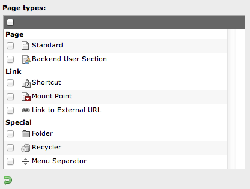
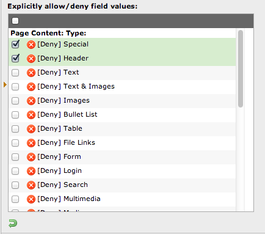

Story #55818
Epic #55813: Access Control Lists
Configurable NodeType constraints
| Status: | Closed | Start date: | 2014-02-09 | |
|---|---|---|---|---|
| Priority: | Should have | Due date: | ||
| Assigned To: | Rens Admiraal | % Done: | 0% |
|
| Category: | - | Spent time: | - | |
| Target version: | - | |||
| Story points | - | |||
| Velocity based estimate | - |
Description
It's currently not possible to restrict NodeTypes other than enabling/disabling them globally
TYPO3 CMS¶
In TYPO3 CMS page and content type permissions are configured separately:


- Blacklist for content types (everything else is configured with whitelists)
- Very basic, it's not possible to define more complex rules (e.g. constraints)
(to be continued)
{kind=link}
{kind=link}
History
#1 Updated by Rens Admiraal over 1 year ago
- In CMS we've the possibility for using ExplicitAllow for the content types (whitelist), that should be the default in Neos (DENY should still be possible too though, like in the security framework)
- NodeTypes have to be 'globally available' to enable the possibility to link between sites, but should only be visible / possible to create if allowed in current context
- Permissions should not only be applied on create, but also on paste / move
- The permissions of a NodeType apply to a context like nodepath, parent node type and maybe even content dimension
- Create already has support for min / max occurence of a node of type x in a collection. This should still be available in the schema but is imho a nice to have to be fully functional
#2 Updated by Bastian Waidelich over 1 year ago
- Assigned To set to Rens Admiraal
#3 Updated by Bastian Waidelich over 1 year ago
Goals for v1¶
- Extend NodeTypes.yaml schema for (dis)allowing child node types
- NodeType constraints are global! (not per site)
- NodeType constraints only limit the allowed child node types for the direct child (not recursive)
To be discussed:
- Required/minimum amount of child nodes is not covered by constraints, but will be implemented separately (e.g. via an "defaultChildNodes" or "autoCreateChildNodes" configuration)
- v1 does not restrict the allowed number of child nodes!?
- how should constraints be communicated to the client (JS)? Ajax / schema / encoded in the markup?
Example¶
1'Acme.Blog:Post': 2 superTypes: ['TYPO3.Neos:Page'] 3 disallowedChildNodeTypes: [ ‘TYPO3.Neos:Document’ ] 4 structure: 5 teaser: 6 type: ‘Acme.Blog:Teaser’ 7 properties: 8 title: ‘Overwrite default title’ 9 'main': 10 type: collection 11 allowedChildNodeTypes: [‘TYPO3.Neos.NodeTypes:Content’] 12 disallowedChildNodeTypes: [‘Acme.Blog:Post’, ‘Acme.Blog:Comment’] 13 'comments': 14 type: collection 15 allowedChildNodeTypes: [‘Acme.Blog:Comment’]
API¶
We need a simple, extensible API that acts as central authority for node type constraints, for example:
1 /** 2 * @param NodeInterface $parentNode The parent node for the new node to be created (can be a NoteTemplate, too) 3 * @param string $propertyName The property for which the new node is created (e.g. "main" or "comments") 4 * @return array An expanded list of all allowed node types for the given context (e.g. array('Acme.Blog:Comment’, 'Acme.Blog:SpecialComment’)) 5 */ 6 public function getAllowedNodeTypes(NodeInterface $parentNode, $propertyName);
See https://docs.google.com/document/d/1RTyFUJ-8r4VuXY2Iq8iLEx9TxpxmAYUg-rzyqSyg7b8/edit#heading=h.fzfxfwcguiic for more ideas
#4 Updated by Rens Admiraal over 1 year ago
Some more thoughts and a first list of tasks. Note that this is just about the global nodetype structure. The possible structure of nodes in the full CR that is, not site specific.
If the nodetype constraints over different sites defer, then the integrator should create specific node type declarations (with unique names) for different sites. This is because having constraints can otherwise cause major issues if we want to support copying nodes between sites for example.
A possible solution to support 'sharing' of nodetypes could be:
- Create the most basic nodetype in 1 site, and extend it in the other site
- Create a 'boilerplate' package holding the common properties, and extend the nodetype in every site package where it's needed
Some thoughts:
- When we will add features like min / max we can extend this schema to support an array of string values or an array with named indexes like:
'comments':
type: collection
allowedChildNodeTypes:
‘Acme.Blog:Comment’:
minOccurences: 1
maxOccurences: 2
- The node constraints are role, and not user specific
- The vie schema should be cached with a cache identifier based on all roles assigned to the current user
- Same for the NodeType Schema
Step 1
- Change the schema builder to be fully tested & using the specific node type constraint instead of just the global "everything is allowed" constraints
- Cache the schema's based on user roles
- Group the calls to the server as much as possible (now multiple calls to the server are done before storing the data in resource cache, this can be combined which will prevent further performance loss if the usage becomes more complex like with adding the constraints)
- Currently the resource cache caches whatever it receives. This should be changed to cache json responses only
Step 2
- Update CreateJS to latest (stable) version as it's releases in the meantime (we're now running on pre-alpha :p )
- Make sure the collection widgets in the CreateJS implementation actually handle the updated schema constraints (this should be reflected in the new element wizard attached to the content element handles)
- Update the structure panel 'insert new element' wizard to use the same constraints
- Update the Navigate component 'insert new node' wizard for inserting documents
#5 Updated by Bastian Waidelich over 1 year ago
Rens Admiraal wrote:
Hi Rens,
thanks for the write-up!
- The node constraints are role, and not user specific
I thought the plan was that these node type constraints should be global (not site- or user/role specific). We said that it's usually not a security related issue, but the structural constraints of a web design.
The NodeTypes a role is allowed to use should be restrictable.
#6 Updated by Rens Admiraal over 1 year ago
Hey Bastian,
Ack to having the node type constraints global, but the schema will not be equal to all user. A user which is only allowed to use nodetypes A, B and C will not have the possibility to add D and E which has to be reflected in the VIE schema for CreateJS
#7 Updated by Rens Admiraal over 1 year ago
just discussed it with Aske and, we need to cover the following tasks too:
- Check the structure before allowing creation / pasting server side in the NodeController, and give a notification to the user if it's not allowed
- Low prio: add min / max occurences of nodetypes in a collection (this is already supported in CreateJS, but would've to be added to the navigate component / server side)
- Nice to have: defaultChildNodes definition in the yaml which would automatically create a set of childNodes on node creation (differs from childNodes feature we have now as it would not be enforced childNodes, but just initial childNodes that could be removed by the user)
Sideways related: we might need to make sure a nodetype could be of type 'collection' and be added using the content management module. Currently this is only possible if the collection is wrapped by another nodetype (like a multiColumn with childNodes of type collection)
#8 Updated by Sebastian Kurfuerst over 1 year ago
Hey everybody,
I like very much what I have read.
Overally I just have one topic which I have not seen here in the thread:
- For Implementation Step 1, I think it is crucial to have a command-line tool (or a Neos backend module, whatever) which allows to check if the CR is currently in sync with the constraints; and (maybe) can do a best-effort to correct errors. This is because the integrator during development will change the constraints quite rapidly and thus the CR might not be in sync anymore; so he might get not what he expects. We need to show him "a way out of this".
Now follow some nitpick comments :-)
Comments for Bastian's Post¶
- NodeType constraints are global! (not per site)
I think we can live with this; I am not sure what to do "per-site". In the long run I could imagine that we solve "per-site" configuration directly in the Flow Configuration Manager (using something like "scopes" or so). We'll see.
- NodeType constraints only limit the allowed child node types for the direct child (not recursive)
While I think this works in many cases, this will definitely give problems when working with ContentCollection. So basically I think it must not be recursive EXCEPT that we need to be able to define what's inside a nested, named content collection. That has been taken into account in the example, though, so I think you thought about this as well.
To be discussed:
- Required/minimum amount of child nodes is not covered by constraints, but will be implemented separately (e.g. via an "defaultChildNodes" or "autoCreateChildNodes" configuration)
- v1 does not restrict the allowed number of child nodes!?
ACK. I think that's fine.
- how should constraints be communicated to the client (JS)? Ajax / schema / encoded in the markup?
AJAX or Schema, definitely NOT encoded in markup I'd say.
Example¶
[...]
overally looks good!
API¶
We need a simple, extensible API that acts as central authority for node type constraints, for example:
[...]
I think that's not "propertyName" here, but $contentCollectionName or the like. Because it's not a node-proeprty but a subnode of type ContentCollection.
Comments for Rens's Post¶
Rens Admiraal wrote:
Some more thoughts and a first list of tasks. Note that this is just about the global nodetype structure. The possible structure of nodes in the full CR that is, not site specific.
If the nodetype constraints over different sites defer, then the integrator should create specific node type declarations (with unique names) for different sites. This is because having constraints can otherwise cause major issues if we want to support copying nodes between sites for example.
I agree; I think it's a rather esoteric edge-case to have completely different sites with different node types etc in the same Neos instance; so we do not need to focus on that I'd say now.
A possible solution to support 'sharing' of nodetypes could be:
... I think we don't need to focus on this now, I'd say :)
- When we will add features like min / max we can extend this schema to support an array of string values or an array with named indexes like:
+2, I like.
just discussed it with Aske and, we need to cover the following tasks too:
- Check the structure before allowing creation / pasting server side in the NodeController, and give a notification to the user if it's not allowed
ACK
Sideways related: we might need to make sure a nodetype could be of type 'collection' and be added using the content management module. Currently this is only possible if the collection is wrapped by another nodetype (like a multiColumn with childNodes of type collection)
I don't understand this yet, but we can discuss that in person soon :)
Conclusion¶
Great work everybody involved!
Hear you soon,
Sebastian
#9 Updated by Bastian Waidelich over 1 year ago
Sebastian Kurfuerst wrote:
Thanks for your comments!
- For Implementation Step 1, I think it is crucial to have a command-line tool (or a Neos backend module, whatever) which allows to check if the CR is currently in sync with the constraints; and (maybe) can do a best-effort to correct errors. This is because the integrator during development will change the constraints quite rapidly and thus the CR might not be in sync anymore; so he might get not what he expects. We need to show him "a way out of this".
Good point, we'll surely need that! (for the record: the logic should not reside in the command controller so that we can reuse it from other places, e.g. UI at some point)
- NodeType constraints are global! (not per site)
I think we can live with this; I am not sure what to do "per-site". In the long run I could imagine that we solve "per-site" configuration directly in the Flow Configuration Manager (using something like "scopes" or so). We'll see.
Yes, we talked about these "context-configuration-overlays" and came to the conclusion that we want to avoid it if possible (for now). Some configuration must not be scope-specific (such as reflection-related things) and for others it might get very confusing. For node type constraints I don't think that's an big issue though as you can work around this with custom node types.
- NodeType constraints only limit the allowed child node types for the direct child (not recursive)
While I think this works in many cases, this will definitely give problems when working with
ContentCollection[...]
True, I always forget this point! ContentCollections need some special handling
We need a simple, extensible API that acts as central authority for node type constraints, for example: [...]
I think that's not "propertyName" here, but $contentCollectionName or the like. Because it's not a node-proeprty but a subnode of type ContentCollection.
Right, I mixed that up. Actually we once said it should accept the target path
#10 Updated by Rens Admiraal over 1 year ago
Thanks for the feedback ;-)
About the ContentCollection... Do you mean that it will be a problem if you set for example the allowedChildNodes on a MultiColumn element, and want to set different constraints for each column? Or something else?
#11 Updated by Christian Müller over 1 year ago
Regarding the per site stuff, just for later. Why not say that site package NodeTypes are only added for the currently requested site? If you then want to have "global" NodeTypes you put that in a seperate package. Just an idea... Can have lots of side effects of course.
#12 Updated by Rens Admiraal over 1 year ago
We thought about that too. But doing so would mean that the constraints describe the structure of nodes that could have a different structure if they're moved to smoother path in the cr. This would mean data loss in current situation (non existing properties are not stored). Also linking between sites will be an issue. And those are just 2 of the things we would run into ;)
Besides that I think having 1 definition of constraints for the full cr (which is also shared between sites) makes a lot of sense.
We played around with multi site installs and from that I learned that the only issue is the visibility of node types in the wizards while they shouldn't be for the current site. This is far easier to handle. I also think that explaining an integrator that he should create a separate nodetype for a site when it has a unique structure is straight forward.
#13 Updated by Bastian Waidelich over 1 year ago
- Status changed from New to Closed
Moved to https://jira.typo3.org/browse/NEOS-34
@Rens you don't have a jira account yet, so I couldn't assign this to you. Will do tomorrow!